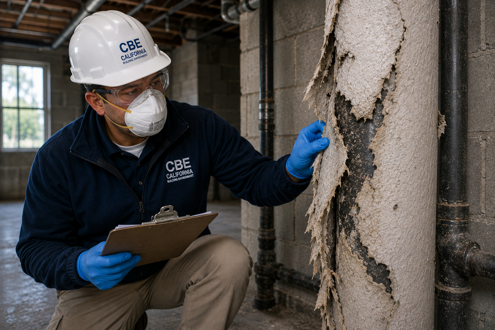
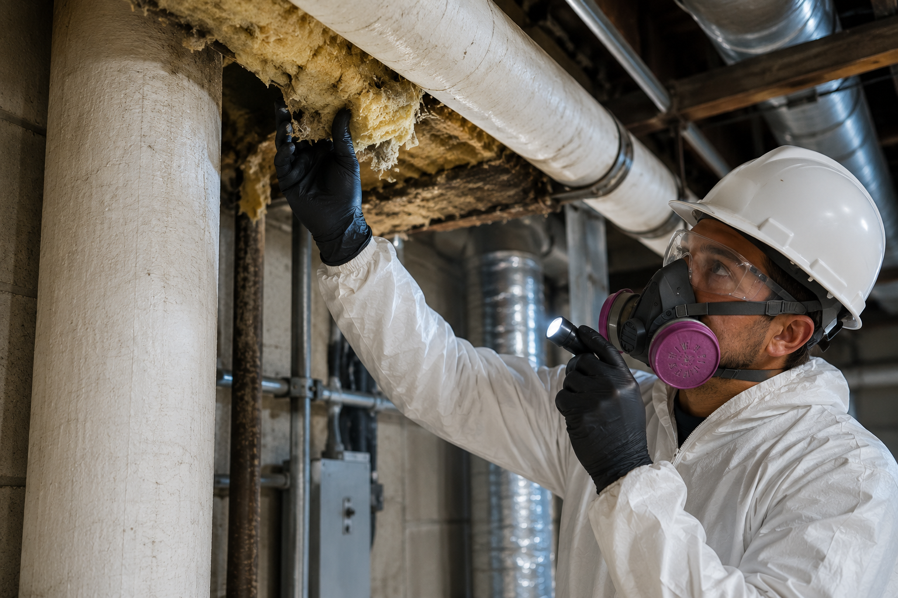

Professional Asbestos Inspection & Sample Collection Services
California Building Environment provides independent asbestos inspections, asbestos sampling, demolition and renovation inspections, asbestos consulting, and professional environmental sample collection throughout Southern California.
Samples collected during inspections are submitted to accredited laboratories for analysis, providing accurate results to support informed project decisions.
Independent Asbestos Inspections for Residential, Commercial & Industrial Properties
Our asbestos inspections are designed to identify suspect asbestos-containing materials before renovation, demolition, remodeling, maintenance activities, or property transactions. We perform detailed visual inspections and collect representative samples when appropriate.
Collected samples are submitted to accredited laboratories for analysis. Laboratory findings are incorporated into a detailed inspection report that can assist property owners, contractors, architects, engineers, and project managers with planning and regulatory compliance.

Common Reasons for Asbestos Inspections
Asbestos inspections are commonly performed before renovation, demolition, property transactions, maintenance activities, and other situations where building materials may be disturbed.
Renovation Projects
Many renovation projects require determining whether asbestos-containing materials are present before disturbing building components.
Demolition Projects
Buildings scheduled for demolition often require asbestos inspections to identify regulated materials before demolition activities begin.
Commercial Buildings
Office buildings, retail centers, warehouses, schools, and healthcare facilities frequently require asbestos inspections during remodeling or maintenance projects.
Residential Properties
Older homes may contain asbestos in flooring, ceilings, insulation, roofing, siding, drywall compounds, and numerous other building materials.
Property Transactions
Buyers, sellers, investors, and property managers often request environmental inspections to better understand existing conditions.
Facility Management
Property owners and facility managers may schedule inspections before maintenance work or capital improvement projects.

Common Materials Evaluated During an Inspection
Every property is unique. During an inspection we evaluate accessible building materials that may require further investigation based on the scope of the project.
- Thermal insulation
- Pipe insulation
- Boiler insulation
- Sprayed fireproofing
- Acoustical ceiling materials
- Drywall joint compound
- Vinyl floor tile
- Flooring mastics
- Roofing materials
- Exterior siding
- Stucco systems
- Cement products
- Mechanical equipment insulation
- Other suspect building materials as observed
How Our Asbestos Inspection Process Works
Project Consultation
We discuss the project scope, property information, and inspection requirements.
On-Site Inspection
A visual inspection is performed to identify suspect asbestos-containing materials throughout the project area.
Sample Collection
Representative samples are collected when appropriate using industry-accepted procedures.
Laboratory Analysis & Report
Samples are submitted to accredited laboratories, and the results are incorporated into a detailed report.
Asbestos Inspection FAQs
Do you perform asbestos testing?
We perform asbestos inspections and collect representative samples during the inspection. Those samples are submitted to accredited laboratories for analysis. We do not perform laboratory analysis ourselves.
Do you remove asbestos?
No. California Building Environment provides independent inspections and consulting only. We do not perform asbestos abatement or remediation services, allowing us to provide objective findings.
How long does an asbestos inspection take?
Inspection times vary depending on the size of the property, accessibility, and the scope of the project. Smaller residential inspections may take one to two hours, while larger commercial or industrial projects may require additional time.
When will I receive my laboratory results?
Laboratory turnaround times depend on the accredited laboratory selected and the requested turnaround service. Results are included in your inspection report once laboratory analysis is complete.
Do you inspect residential and commercial properties?
Yes. We provide asbestos inspections for residential homes, apartment buildings, commercial properties, industrial facilities, schools, healthcare facilities, and government buildings throughout Southern California.
Regulatory Framework
Asbestos inspections in California are governed by several federal and state regulations. Our inspections comply with:
- EPA AHERA — Asbestos Hazard Emergency Response Act (40 CFR Part 763, Subpart E) requires asbestos inspections for schools and commercial buildings.
- EPA NESHAP — National Emission Standards for Hazardous Air Pollutants (40 CFR Part 61, Subpart M) requires asbestos inspections before demolition and renovation activities.
- CDPH Asbestos Program — California Department of Public Health regulates asbestos inspectors and accredits inspection firms.
- SCAQMD Rule 1403 — South Coast Air Quality Management District requires asbestos notifications before demolition and renovation in the South Coast basin.
All inspections are performed by California CDPH-certified asbestos inspectors and samples are analyzed by NVLAP or ELAP-accredited laboratories.
Request a Quote
Do I Need an Asbestos Inspection?
Check if any of these apply to your situation:
If you checked one or more, an asbestos inspection is likely required by law.
Schedule Asbestos InspectionUnderstanding Asbestos Regulations
California and federal law require asbestos inspections in specific situations. Here is what the regulations mean in plain English:
AHERA (Asbestos Hazard Emergency Response Act)
This federal law requires schools to inspect buildings for asbestos and maintain an inspection database. If you manage a school or public building, AHERA-compliant inspections are mandatory.
NESHAP (National Emission Standards for Hazardous Air Pollutants)
Before demolishing or renovating any building, NESHAP requires an asbestos inspection to identify regulated materials. This applies to residential and commercial properties alike.
SCAQMD Rule 1403
In the South Coast Air Quality Management District (including Orange County and parts of LA, Riverside, and San Bernardino counties), Rule 1403 requires advance notification and inspection before any asbestos removal project.
Inspection Timeline
Quote Response
We respond to your request within one business day.
Inspection Scheduling
Most inspections are scheduled within 2-5 business days.
On-Site Time
Residential inspections typically take 2-4 hours.
Report Delivery
Lab results and your complete report within 5-7 business days.
Why Independent Inspections Matter
We never perform asbestos abatement or remediation. Our findings are objective, unbiased, and in your best interest.
No Conflict of Interest
Accredited Lab Results
Certified Inspectors
Need an Independent Asbestos Inspection?
Contact California Building Environment to schedule an asbestos inspection, discuss your project, or request a quote.